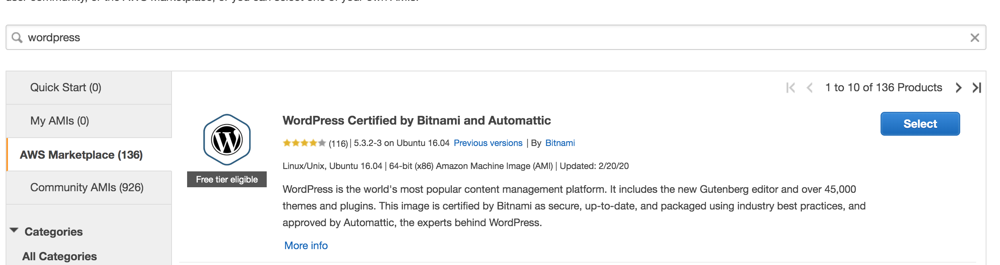
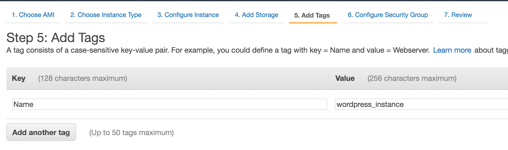
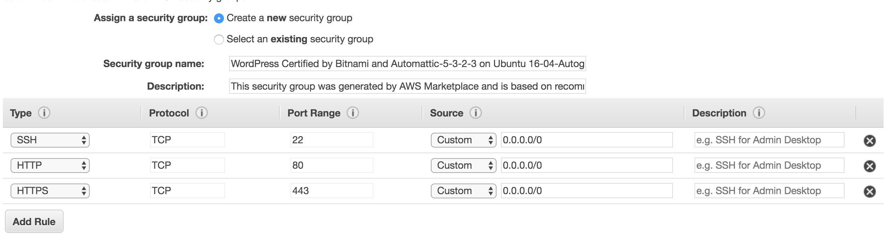
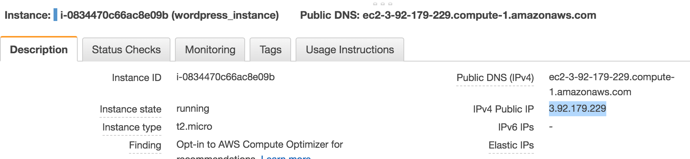
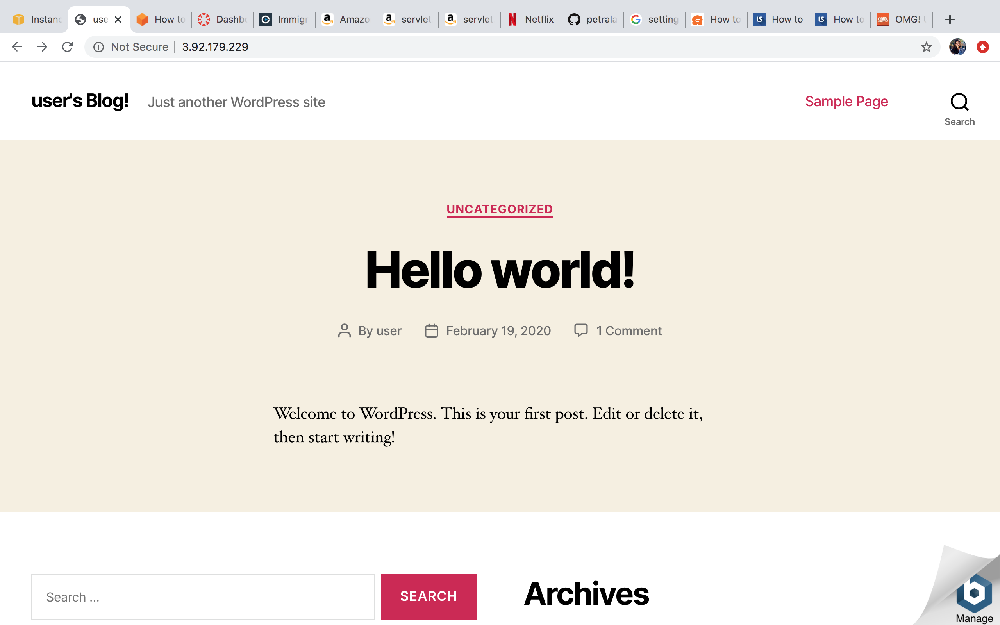
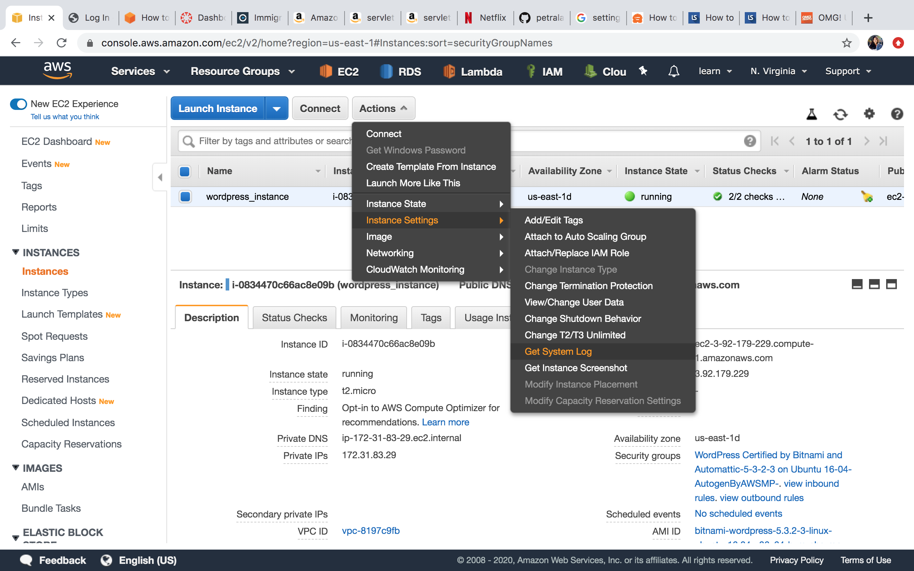
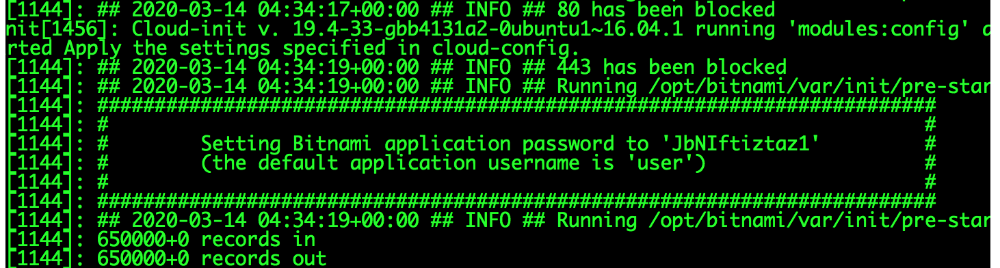

March, 13 2020
Hosting Wordpress Site on EC2
This week I will talk about creating a website using Wordpress and hosting it on AWS EC2 instance. For those of you who would like to have your own website but don't want to do a lot of coding, this can be a good option for you.
First, launch an instance with special ami for Wordpress
This step is similar to what we did on blog0. We will also be using EC2 instance. You may pick your preferred region, but for me in here I will be using us-east-1 (North Virginia). You can check which region you are on by looking at the upper right hand of your management console.
Once you picked a region, go to EC2 service and click on the instances tab on the left menu. Once you clicked on the instances tab, you will see an option to launch an instance. Go click on launch an instance button.

Now it's time to configure our EC2 instance. When you are prompted to pick the AMI, click on the AWS marketplace and look for Wordpress. You may also type wordpress on the search bar and once pick the WordPress certified by bitnami and automattic. See picture below for reference.

You will be presented a detailed information about the rate and just scroll all the way down and click continue
For the instance type, I picked t2 micro which is free tier eligible. And for the rest of the configuration I kept the default configuration. I also named my instance by adding the tag, see picture below:

For security group, the default configuration already has rules for ssh, http, and https so I will keep it just like that. You can always modify the source IP to make it more secure if you want to.

Now we are ready to launch our wordpress instance, so just proceed and launch your instance. When asked about the keypair, you may assign your existing keypair or create a new one or even proceed without keypair. You don't have to use any keypair if you're not planning on sshing into this instance. If you do, make sure you use a keypair.
Setting up your WordPress site
Once your EC2 instance is fully running, you can start setting up your WordPress site. To access your wordpress login site, look for the public IP of your EC2 instance we created earlier and copy it into your browser. You can find this under the description of your instance. See picture below for reference:

Once you access your wordpress site by using the public IP of your instance, you will be directed to a Sample page. You can scroll down and look for Log in under the Meta menu
Now go back to your AWS management console and go to your ec2 instance page. Select your instance and then click on actions then Instance Setting and then Get System Log.

Now you're gonna obtain your credential by looking at your system log. Scroll down all the way until you find your username and password. See picture below

Note your credential and use that to login to your WordPress account and once you log in, you can customize your wordpress site according to what you want.